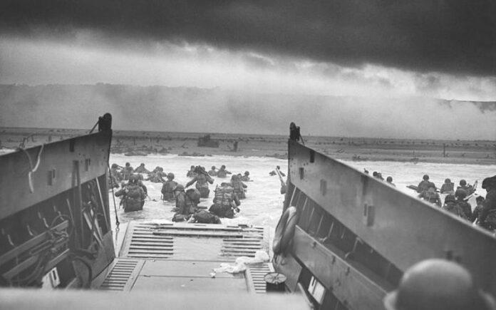
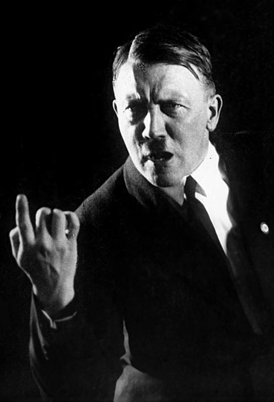
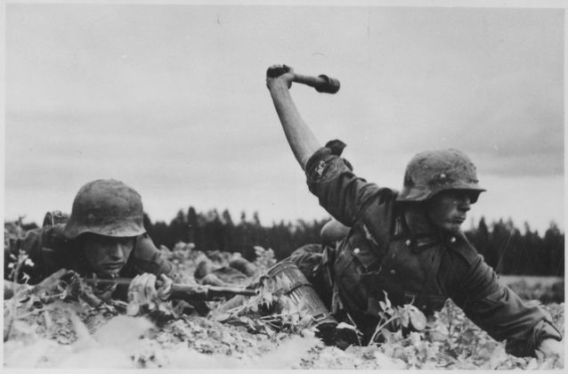
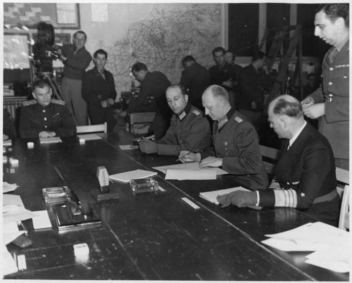

¿Qué fue la Segunda Guerra Mundial?

Desembarco en Normandía.
La Segunda Guerra Mundial fue un conflicto bélico en el que participó una gran parte de los países del mundo, entre 1939 y 1945, enfrentados en dos grandes bloques militares: los Aliados y las potencias del Eje. Culminó con el triunfo de los Aliados.
Este conflicto está considerado como el más sangriento de la historia. Los historiadores calculan que fallecieron entre 50 y 70 millones de personas, un 2,5% de la población mundial.
Entre los episodios más terribles destacan el bombardeo sobre población civil en numerosas ciudades, el Holocausto o las bombas atómicas lanzadas sobre Japón.
El final de la Segunda Guerra Mundial dio lugar a un mundo totalmente diferente. Dos grandes superpotencias, Estados Unidos y la Unión Soviética, se repartieron las áreas de influencia, dando lugar a la Guerra Fría.
Gran Bretaña y Francia perdieron poder, a pesar de estar entre los vencedores, y Alemania, aunque dividida, consiguió recuperarse en pocos años.
Antecedentes
Tratado de Versalles
El Tratado de Versalles determinó cómo iba a quedar Europa tras la Primera Guerra Mundial. Aunque a las reuniones acudieron hasta 32 países, el acuerdo fue obra de los Estados Unidos, Inglaterra y Francia.
Los historiadores coinciden en que las indemnizaciones impuestas a Alemania, como país derrotado, influyeron decisivamente en la llegada del siguiente conflicto mundial. No solo fueron pérdidas territoriales, sino también gravosas indemnizaciones económicas.
Por su parte, Italia se sintió humillada por el Tratado. A pesar de haber formado parte de la coalición victoriosa, casi ninguna de sus reivindicaciones fueron atendidas.
República de Weimar
La llamada República de Weimar, el régimen político surgido en Alemania tras la I guerra, se veía superado en todos los frentes. La inflación alcanzó niveles altísimos y arruinó a parte de la clase media.
Por otro lado, aparecieron numerosos grupos paramilitares voluntarios, especialmente los freikorps.
El país sufría de una gran inestabilidad, con constantes levantamientos de grupos obreros e izquierdistas. Estos eran reprimidos con violencia por los freikorps, muchas veces con la colaboración del gobierno.
La población general reclamaba estabilidad y orden, y pronto surgió un partido que prometía implantarlo y hacer de Alemania una gran potencia de nuevo.
Personajes representativos
Hitler

Hitler en 1932
En 1923, el Partido Nacional Socialista de Adolf Hitler, siendo aún muy pequeño, había intentado dar un golpe de estado. Ese intento acabó con el partido ilegalizado y Hitler en la cárcel.
La década de los 30 comenzó con una terrible situación económica. La República de Weimar no era capaz de mantener el orden y los conflictos se intensificaban.
El Partido Nazi aprovechó el descontento de la población. Sus propuestas iban dirigidas a que Alemania recuperara su poderío militar. Culpaba de la situación del país a los comunistas dirigidos por extranjeros, a los judíos y a los Aliados.
Prometían, además, recuperar los territorios perdidos y ampliar sus fronteras hasta asegurarse lo que llamaban Lebensraum, el espacio vital.
Con estas ideas se presentaron a las elecciones de 1932, logrando un 33,1% de los votos, siendo el partido más votado. Hitler fue nombrado canciller y el presidente le encargó formar gobierno. El incendio del Reichstag, al año siguiente, dio la excusa para declarar el estado de excepción e ilegalizar a los comunistas, sus principales rivales.
Tras esto, Hitler volvió a convocar elecciones, consiguiendo un 43,9% de los votos. En pocos meses acabó con las estructuras democráticas e instauró una dictadura.
Fascismo de Mussolini
En Italia había tomado el poder un partido que fue la inspiración para el de Hitler. Era el Partido Nacional Fascista de Benito Mussolini, que se proclamaba nacionalista, expansionista y militarista. En 1936, Italia invadió Etiopía y en 1939, Albania.
Mussolini, al igual que Hitler, pretendía expandir las fronteras italianas. Una vez alcanzado el poder, acabó con las libertades individuales y eliminó a sus opositores. Firmó con Alemania los Pactos de Acero.
Japon
Lejos de Europa, Japón fue el protagonista de la llamada Guerra del Pacífico. Era un país fuertemente militarizado.
A finales del siglo XIX, los japoneses dieron muestras de sus intenciones imperialistas atacando y derrotando a China. La intervención de Rusia y de las potencias occidentales impidió que se anexionaran parte del territorio conquistado. Poco después, Japón consiguió derrotar a Rusia en otra guerra y afianzarse como gran potencia asiática.
En los años 30, el empuje japonés era casi imparable: en 1931 invadió Manchuria y convirtió la región en un protectorado.
La Sociedad de Naciones condenó el hecho, pero Japón se limitó a abandonar la organización. En 1937, dio comienzo una nueva guerra con China. Gran Bretaña y Estados Unidos reaccionaron apoyando a los chinos, con embargos comerciales que afectaron enormemente a los japoneses.
Fases de la Segunda Guerra Mundial
La “guerra relámpago”
La primera fase del conflicto es conocida como “guerra relámpago”. Polonia fue invadida en un mes por Alemania, aunque la parte oriental del país quedó en manos de los soviéticos, gracias al Pacto de no agresión firmado con los nazis.
Francia y Gran Bretaña declararon la guerra a Alemania, pero hasta marzo de 1940 no tomaron ninguna iniciativa bélica.
Por su parte, Alemania ocupó en pocos días, en abril de ese año, Noruega y Dinamarca. La intención era asegurarse el hierro que producían ambos países nórdicos, fundamental para la industria bélica.
El siguiente paso de Hitler fue mucho más ambicioso. En mayo lanzó una ofensiva contra Francia. A pesar de la potencia militar de los franceses, en menos de un mes, todo el país quedó en manos nazis.
El 14 de junio las tropas nazis entraron en París. Francia quedó dividida en dos: una zona ocupada y otra con un gobierno colaboracionista (gobierno de Vichy).
La rapidez de esas campañas originó el nombre “guerra relámpago”. En solo nueve meses, Hitler había ocupado gran parte de la Europa continental. Solo Gran Bretaña quedaba para hacerle frente.
Bombardeos sobre Londres
Los nazis tenían la intención de acabar con la guerra rápidamente. Según los historiadores, Hitler estaba decidido a intentar la invasión de Gran Bretaña, pero sus generales le convencieron de que era imposible sin controlar antes el espacio aéreo.
Esto provocó que, durante varios meses, la batalla entre ambos países se desarrollara en el aire. Una de las tácticas usadas por ambos países fueron los bombardeos indiscriminados sobre las ciudades.
Los alemanes lanzaron miles de bombas sobre Londres y los británicos respondieron haciendo lo mismo sobre Berlín y otras ciudades alemanas. El resultado final favoreció a los británicos, que lograron frenar la invasión.
Mientras, Italia también había empezado a lanzar sus propios ataques. Mussolini intentó ocupar Grecia, pero fue rechazado por griegos y británicos. Esto obligó a Hitler a dedicar tropas a ayudar a su aliado.
A partir de abril de 1941, nuevas operaciones rápidas permitieron a las tropas alemanes controlar Yugoslavia y Grecia, haciendo que los británicos se retiraran.
El frente ruso

Tropas alemanas en Rusia, 1941
El Pacto firmado por Alemania y la Unión Soviética se desmoronó pronto. Stalin había aprovechado la guerra para anexionarse Estonia, Letonia, Lituania y el sur de Finlandia, lo que chocó con los deseos de Hitler.
Hitler, ferozmente anticomunista, comenzó a preparar la Operación Barbarroja con el propósito de invadir la URSS. El 22 de junio de 1941, los alemanes penetraron en territorio soviético por tres zonas diferentes y Stalin firmó un nuevo tratado con los británicos.
En el plano militar, los soviéticos comenzaron a aplicar la táctica de tierra arrasada.
Aunque los primeros movimientos alemanes fueron un éxito, pronto su avance se ralentizó. El invierno atrapó a las tropas nazis sin que estuvieran preparadas. Las temperaturas alcanzaron los -32° C, matando a miles de soldados y paralizando la ofensiva.
Los alemanes, no obstante, consiguieron aguantar hasta la primavera. En septiembre de 1942 llegaron a las puertas de Stalingrado, donde tuvo lugar el asedio más duro y feroz de toda la Segunda Guerra Mundial.
Tras meses de batalla, los alemanes se rindieron el 2 de febrero de 1943, lo que cambió el curso de la guerra.
Pearl Harbour

Mientras los alemanes invadían la Unión Soviética se produjo otro acontecimiento vital para el resultado de la guerra: la entrada de los Estados Unidos en el conflicto. En un primer momento fue neutral, aunque apoyó de manera encubierta a los aliados permitiéndoles comprar armas a crédito.
Japón había firmado un tratado con Alemania e Italia en 1940. Dentro de su campaña expansionista, había ocupado varias colonias francesas, británicas y holandesas. Además, su imperialismo iba en contra de los intereses comerciales estadounidenses, que respondieron imponiendo severas sanciones económicas y comerciales.
El imprevisto ataque japonés a la base naval estadounidense de Pearl Harbour destruyó parte de la flota norteamericana y provocó que EE.UU. declarara la guerra a Japón y, poco después, a Italia y a Alemania.
A principios de 1942, la situación parecía favorable a los japoneses. Habían conquistado Singapur, Indonesia, Birmania y Filipinas, pero durante el verano de ese año la situación cambió completamente.
Los estadounidenses vencieron en la batalla de Midway, hundiendo todos los portaaviones enemigos.
A partir de ese momento, la derrota japonesa fue solo cuestión de tiempo. Sin embargo, la resistencia feroz de los nipones alargó el conflicto durante meses.
Consecuencias de la Segunda Guerra Mundial

Firmas de las actas de capitulación alemanas.
Devastación de Europa
Los bombardeos y las conquistas de ciudades dejaron al continente europeo totalmente devastado. Tras la guerra, la inversión económica para reconstruir fue inmensa y Estados Unidos, con su Plan Marshall, fue uno de los contribuyentes más destacados. Esto también le valió para ganar influencia y convertirse en la gran superpotencia mundial.
Además de los daños materiales, se calcula que entre 50 y 70 millones de personas fallecieron durante el conflicto. La mayoría, civiles.
Dos bloques y Guerra Fría
Estados Unidos y la Unión Soviética aparecieron como grandes potencias globales, aglutinando a su alrededor al resto de países. La competencia era ideológica, económica y militar.
Esta situación se conoció como Guerra Fría. Los enfrentamientos entre las dos potencias se desarrollaban indirectamente, pero el temor a una catástrofe nuclear siempre estuvo presente.
Crisis económica
Como consecuencia de un exorbitante gasto en poderío militar y recursos, los países protagonistas de la guerra fueron azotados por una fuerte crisis económica. Alemania, Francia e Inglaterra se declararon en bancarrota.
Esto a su vez provocó que Francia e Inglaterra tuvieran que renunciar a sus colonias (como India o Argelia).
Avances científicos y tecnológicos
- Química, aeronáutica y cohetes: se desarrollaron varios productos, como la goma sintética para la industria, el nylon (usado como material para los paracaídas, en su fabricación se utilizó mano de obra de prisioneros de los campos de concentración).
En el campo de la aeronáutica y balística, también se desarrollaron nuevos sistemas de propulsión para bombarderos y cazas.
Los sistemas creados para los cohetes autopropulsados fueron aprovechados después para avanzar en la carrera espacial.
- Matemáticas, cibernética e informática: los científicos crearon un nuevo campo en las matemáticas: la investigación operativa, con el que se trataban problemas de optimización complejos.
En el ámbito de la informática, la Segunda Guerra Mundial fue testigo del primer uso de ordenadores aplicados a la guerra. El ordenador alemán de Konrad Zuse se usó para la aviación. En Gran Bretaña, Coloso fue un ordenador digital construido para romper los códigos alemanes.
- Fisión nuclear y la bomba atómica: desde diciembre de 1938, tras las investigaciones desarrolladas en Alemania sobre la fisión del uranio, la posibilidad de usar este proceso como arma militar se hizo evidente.
Todas las potencias comenzaron una carrera para crear la primera bomba atómica. Los alemanes parecían tener ventaja, pero fueron los estadounidenses los que se adelantaron. Las primeras bombas se lanzaron en agosto de 1945 sobre Hiroshima y Nagasaki.